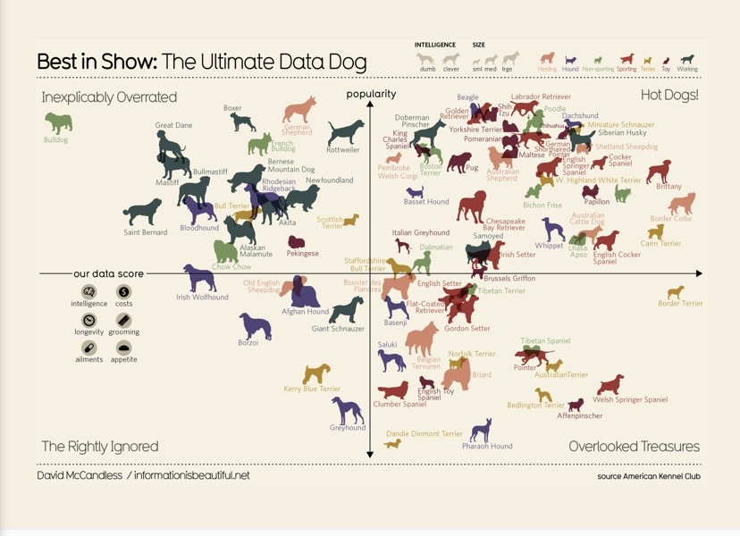
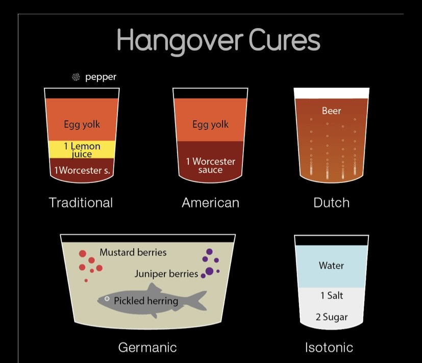
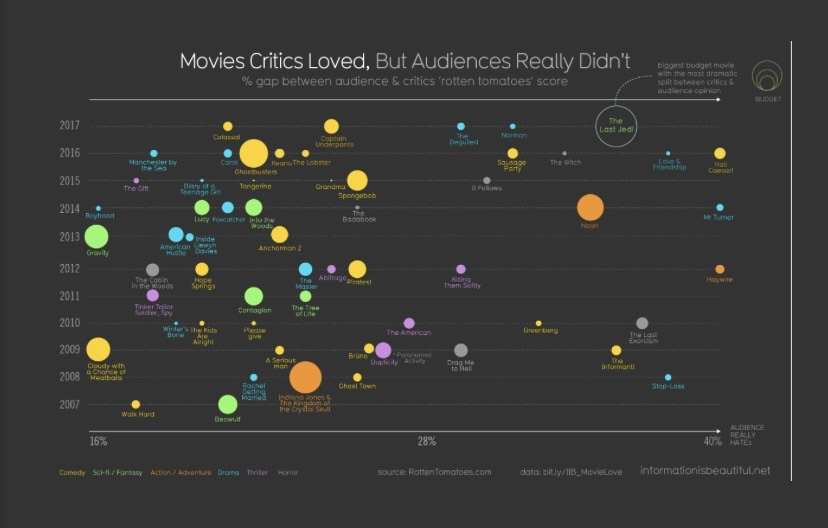

data Data-Visualisation Planning
Data-driven Artwork Planning
The data art/visualisation above shows information about dogs in an interesting way, it is showing a lot of information but in a simple way. This visualisation also tells a story that the audience can understand and ultimately come to their own conclusion or even create their own story. Relating this to how I would use this for my data art, I would be able to display and create a story that works with the data set that I have chosen. With this data dat it would mean that I would have to carefully choose which data set I would like to present as this form of data art requires a data set that would be clear and understandable to the audience without causing confusion. Example 2:
The data art/visualisation is displaying information about hangover cures and it displays portions that one can use to recreate the drinks. This form of data art has been done with artistic intent, we see this through the type of visuals that have been used to display the data. It is also clear and easy to understand as it is not clustered and everything has been spaced out well and labelled well. This data art style would not work well for my data set as it will subvert the meaning of my data set. The data art works well as it speaks to portions drinks need whereas my data set does not deal with portions per se. It would be able to help the user understand the data-driven narrative that I want to present, however, it wouldn’t be a clever way of presenting the particular data set I have chosen to use. I would like to display the use of an example that allows me to display multiple pieces of information in such a way that caters to the topic/data set that I am using which also falls in line with the intentions I have towards the final design choices for my data art section. Example 3:

The data art/ visualisation above is presented in the form that a bar graph would be presented however the x-axis is sectioned into parts and the art used is circles to present the plot points as well as the genre of the movie being critiqued. What is interesting about the plot points is that they are all different sizes which may mean something either it being how many people may have watched the movie or it could entail the popularity of that movie which is a creative way of displaying this ‘hidden’ information.
Using this data art would require me to use data that may be commonly used simply because I would be able to gather data/research data that would fall in line with the data represented on this graph and it would make it easier to implement the idea this graph presents.
For my own data art, I want to use the first graph because it worked well with the data set, I’ve chosen not only does it help push forward the narrative I want to present to the audience. The visualisation is also neat and I’m able to present a data set that may potentially require room to present all the data present. I do think that the data art does enhance the meaning of my data set as the art used shows the information that I’m presenting without having to explain what the data is, it also visualises the data with artistic intent, “through the choice of representation, through other aspects of the visual encoding…” (Thudt, Walny, Gschwandtner, Dykes and Stasko 2018: 16). The visuals I would use could be controllers or something related to games to help the audience understand the data being presented at first glance. The data visualisation/art does in a way reveal a new way of thinking about data with regard to the data set I have chosen. I think I have presented my data art well because I did research on what data art is and have used the readings for guidance to help me understand what is meant by data art. My work isn’t perfect however I do think that it follows the principles/characteristics of data art.